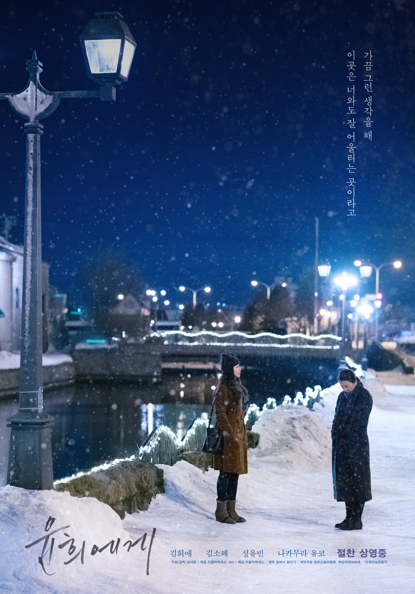

윤희에게 Moonlit Winter | |
|  | |
| 감독 | 임대형 |
| 출연 | 김희애, 김소혜, 나카무라 유코, 키노 하나 등 |
| 제작 국가 | 한국 |
| 장르 | 멜로/로맨스 |
| 상영 시간 | 105분 |
| 개봉일 | 2019. 11. 14 |
| 심의 등급 | 12세 관람가 |
"여성 연대가 치유하는 여성의 삶, 윤희에게"
윤희에게는 2018년에 개봉한 중년 레즈비언의 이야기를 담은 영화이다.
어느 날, 쥰의 책상에서 부치지 못한 편지를 우연히 발견한 마사코는 쥰을 대신해 보내주기로 마음먹는다. 그렇게 부쳐진 편지는 한국의 졸업을 앞둔 고등학생, 새봄의 손에 들어온다. 편지의 내용을 읽은 새봄은 이 편지에서 말하는 윤희가 자신의 엄마인 윤희임을 깨닫고, 이혼한 아빠와 사진관을 운영하는 삼촌을 찾아가 엄마에 대해 묻는다. 그리고는 엄마와 한 침대에 누워 자신이 왜 아빠가 아닌 엄마와 함께 살기로 결정했는지 이유를 말해주며 졸업여행으로 일본으로 가지 않겠냐고 물어오는데... 과연 윤희는 어떤 선택을 하게 될까?
한국에 사는 중년 여성. 전남편과 이혼하고 새봄이라는 딸과 둘이 살고 있다.
식당 노동자로 일하며 그 고충을 새봄 몰래 담배를 피워 해소하며 살아가고 있다.
일본에 사는 수의사 중년 여성.
카페를 운영하는 고모 마사코와 고양이 한 마리를 가족으로 삼아 함께 살고 있다.
카페를 운영하는 쥰의 고모.
쥰의 편지를 윤희의 딸인 새봄에게 보낸 장본인이다.
사진을 좋아하는 졸업을 앞둔 고등학생.
마사코가 보낸 편지 속 윤희의 딸으로, 이혼한 아빠와 사진관을 운영하는 삼촌 사이를 오가며 엄마에 대해 물어보게 된다.
자신의 졸업여행을 빌미삼아 엄마인 윤희를 일본에 데려갈 계획을 세운다.
개봉 전부터 김희애가 출연한 영화로 주목을 받았다. 2019년 부산국제영화제 폐막작으로 다시 한 번 이목을 끈 다음 개봉 이후에는 전반적으로 호평을 받고 있다. 2019년 12월 22일 기준 네이버 영화 사이트에서 관람객 별점 9.21, 네티즌 별점 9.08을 기록했다.
여성과 소수자를 향한 차별이 완고했던 시대를 통과한 수많은 ‘윤희들에게’ 긍정할 만한 용기를 건네는 영화다. 분노 대신 체득과 치유의 정서를 택한 영화는, 고독을 직시하면서도 사람의 아름답고 선한 마음을 향해 믿음을 잃지 않는다. 성취해야 할 주제를 향한 강박 없이 영화 전체를 감싸는 침착한 집중력이 돋보이고, 종종 틈입하는 엇박의 유머가 기분 좋게 긴장을 이완시킨다. [1]
윤희와 쥰의 결합으로 끝나지 않는 결말이 기존의 클리셰를 부수는 것과 동시에 둘이 합치는 쪽이라기보다 인생의 주체성을 회복한 느낌으로 끝나 의외였다는 평가가 있었다.
감독이 여성이었다면 여성 공동체를 구축하는 결말을 상상해볼 수 있지 않았을까 하는 아쉬움이 있다는 평도 있었다.
여성들에게 사회적 여성성을 강요하는 억압 기제를 의미하는 코르셋이 영화 작품 내에서 두드러지게 강조되지 않으면서도 의상을 통해서 등장인물의 생활 환경의 변화를 효과적으로 잘 보여주는 디테일을 살렸다는 평가가 있었다.
여성들의 조력으로 윤희가 삶을 회복하는 과정, 한편 두 여성이 삶을 회복하는 과정에서 남자들의 배제가 앞서 있었다는 점이 인상적이라는 평가가 있었다.